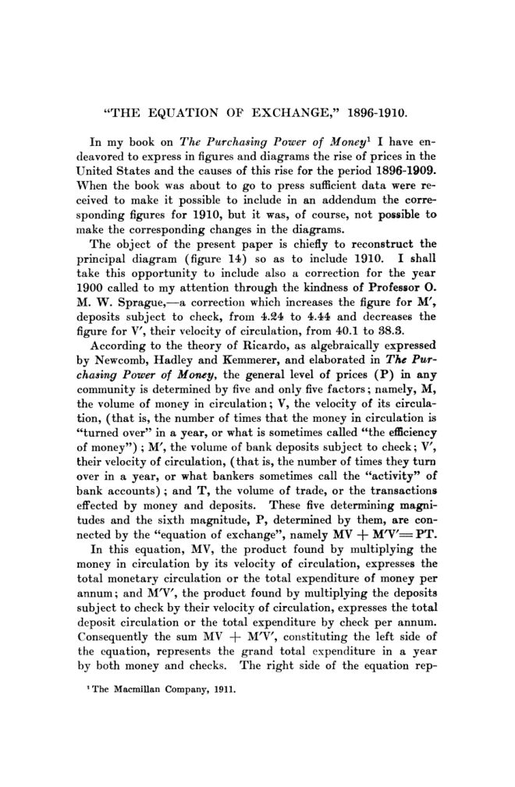

Fisher, 1911: a equação de trocas posta na balança
Leitura: 7 min
Fisher estende até 1910 os números de MV + M'V' = PT, decompõe a alta de 72% dos preços americanos desde 1896 e arrisca, em caráter provisório, uma crise entre 1913 e 1916.


A figura central do artigo é uma balança romana. À esquerda pendem uma bolsa, que representa a moeda em circulação, e uma caderneta bancária, que representa os depósitos movimentáveis por cheque; a distância de cada peso ao fulcro é a sua velocidade de circulação. À direita pende uma bandeja de mercadorias, o volume de comércio, a uma distância que representa o nível de preços. Irving Fisher, de Yale, desenha quinze dessas balanças, uma para cada ano de 1896 a 1910.
O objetivo declarado é modesto: refazer o principal diagrama de The Purchasing Power of Money, lançado pela Macmillan em 1911, para incluir 1910, cujos dados só chegaram a tempo de entrar num adendo. Fisher aproveita para registrar uma correção indicada por O. M. W. Sprague para 1900, que eleva os depósitos de 4,24 para 4,44 bilhões de dólares e reduz sua velocidade de 40,1 para 38,3.
O que diz a equação?
Segundo a teoria de Ricardo, na forma algébrica dada por Newcomb, Hadley e Kemmerer, o nível geral de preços P depende de cinco fatores e só deles: a moeda em circulação M, sua velocidade V, os depósitos sujeitos a cheque M', sua velocidade V' e o volume de comércio T. A equação de trocas, MV + M'V' = PT, diz que o total gasto em moeda e cheques num ano é igual ao valor das mercadorias compradas. Na leitura de Fisher, P é o elemento passivo, efeito dos outros cinco.
Os números vêm de fontes oficiais, com ajustes. M parte das estimativas do diretor da Casa da Moeda e do Comptroller of the Currency e exclui o dinheiro no Tesouro e nos bancos. A velocidade da moeda segue o método que Fisher publicara no Journal of the Royal Statistical Society em 1909. O comércio combina estatísticas de comércio interno, exportações e importações, vendas de ações, toneladas transportadas por ferrovia e cartas postadas. Os preços se baseiam sobretudo nos preços por atacado de 258 mercadorias do Bureau of Labor, com peso também para ações e salários.
Como cada grandeza foi estimada de forma independente, os dois lados da equação não fechavam exatamente. Fisher alterou os seis números para que fechassem e diz isso com franqueza: os ajustes raramente passaram de 1% e nunca de 5%.
O que explica a alta dos preços?
O quadro geral é de expansão: os pesos aumentam e se afastam do centro, com a única exceção de 1908, depois da crise de 1907. A moeda quase dobrou em catorze anos, e sua velocidade pouco mudou. Os depósitos quase triplicaram, e sua velocidade subiu sobretudo nos últimos anos. O comércio dobrou, enquanto os preços subiram três quartos. Em 1909 e 1910, a velocidade dos depósitos atingiu níveis sem precedentes, sinal de que o americano médio mantinha saldos muito pequenos em relação aos gastos.
O americano médio, escreve Fisher, “está pendendo para uma política de perdulário”. (“he is leaning toward a spendthrift policy”)
Para medir o peso de cada fator, Fisher faz um exercício contrafactual: recalcula o nível de preços de 1910 mantendo um dos fatores no valor de 1896 e os demais como de fato foram. Sem o aumento da moeda, os preços, em vez de subir 72%, teriam caído 7%.
Por trás dos cinco fatores, Fisher identifica causas anteriores, que agem sobre eles: a produção mundial de ouro, que explica o aumento da moeda; a concentração da população nas cidades, que elevou a velocidade dos depósitos; e a expansão das facilidades bancárias, que ampliou os depósitos. O ouro é, para ele, o mais importante. A tarifa teria tido influência pequena.
Em 1910, a alta de preços se deveu quase só aos depósitos, e a moeda pouco cresceu. Fisher insiste que o problema é internacional. Sem a expansão americana dos depósitos, o país teria recebido sua parte do aumento mundial da moeda; os depósitos tenderam a expulsar o dinheiro, e essa expulsão só não reduziu a moeda americana porque havia mais ouro no mundo.
O que Fisher previa?
Com cautela explícita, ele espera para 1911 uma contração geral, sem crise aguda, seguida da retomada da alta de preços e da expansão dentro de um ou dois anos, até culminar numa crise, possivelmente entre 1913 e 1916. O fundamento é a analogia com a tendência expansiva que levara à crise de 1907 e, até onde os dados permitiam julgar, às de 1857, 1866 e 1873.
“Ainda estamos num período de incubação de uma crise futura.” (“we are still in a period of incubation for a future crisis”)
O sinal de alerta que Fisher destaca é o avanço do cheque. Entre 1896 e 1910, a parcela das transações feitas com dinheiro caiu de 14% para 8%, e a feita com cheques subiu de 86% para 92%. O americano se orgulhava de usar cheques mais que qualquer outro povo, mas tanto crédito agravaria os colapsos que seguem as crises.
A conclusão vai além do ciclo. As flutuações de crédito, diz Fisher, costumam ser iniciadas por variações no metal básico, o ouro, que produzira a alta de 1850 a 1857, a queda de 1873 a 1896 e a nova alta desde 1896. Os economistas deveriam pensar seriamente em controlar o poder de compra da moeda, e ele remete ao livro, onde discute planos para isso, inclusive uma proposta própria.
Na minha leitura
Na minha leitura, o artigo mostra a força e o limite da equação de trocas. Como identidade contábil, ela é inatacável: o que se gasta é igual ao valor do que se compra. O conteúdo econômico está em outra afirmação, a de que P é passivo e de que velocidades e comércio não dependem da quantidade de moeda. O exercício contrafactual de Fisher, que muda um fator e mantém os outros, só tem sentido sob essa hipótese. Ele a declara, discute as exceções no livro e trabalha com números ajustados que confessa ter ajustado, o que é raro e valioso.
O ponto mais atual está nos depósitos. Fisher percebe que a expansão do crédito bancário e de sua velocidade pesa tanto quanto o ouro, e que o meio de pagamento dominante já não era a moeda metálica. Daí a dupla conclusão: o sistema bancário amplifica o ciclo, e um padrão monetário cuja oferta depende da mineração não garante poder de compra estável. A pergunta que ele deixa, como estabilizar esse poder de compra, organizou boa parte da teoria monetária do século seguinte.
Glossário
- Equação de trocas
- identidade MV + M'V' = PT: gasto total com moeda e cheques igual ao valor das transações.
- Velocidade de circulação
- número de vezes, num ano, em que uma unidade de moeda ou de depósito é usada em pagamentos.
- Depósitos sujeitos a cheque
- depósitos à vista que podem ser movimentados por cheque e funcionam como meio de pagamento.
- Teoria quantitativa da moeda
- proposição de que o nível de preços varia com a quantidade de moeda, dadas velocidade e volume de comércio.
- Contrafactual
- cálculo do que teria ocorrido se um fator não tivesse mudado, mantidos os demais como de fato foram.
- Ano-base
- ano tomado como referência (aqui, 1909 = 100) para expressar preços e quantidades de outros anos.
Fontes
- "The Equation of Exchange," 1896-1910 — Irving Fisher (Yale University) (pp. 296–305). JSTOR · Internet Archive (PDF)
- Edição completa, com os demais artigos: Nº 114 do Arquivo.
Documento em domínio público (EUA, publicado antes de 1931), via JSTOR Early Journal Content e Internet Archive. Resumo e comentário do autor deste site, sem afiliação com a American Economic Association. Encontrou um erro? Escreva: a correção é publicada no próprio texto, com data.
↑ Nº 114 · Junho de 1911: o plano Aldrich, o Canadá e a equação de trocas Sprague, 1911: o plano Aldrich e o risco do crédito fácil →